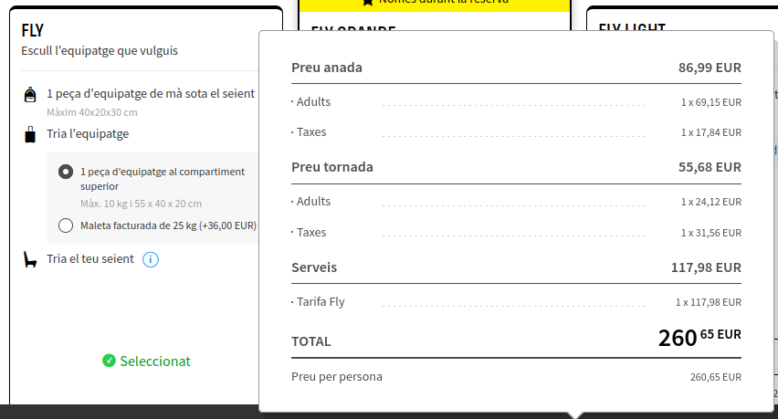

Anar a l’aeroport de Barcelona i agafar el vol d’anada a l’aeroport de Roma (Fiumicino).
Una vegada hem arribat a l’aeroport de Fiumicino al es 11.35, hem de recollir el nostre cotxe d’alquiler per viatjar per Roma i les diferents localitats a les 12.00.
Coliseo Romano. Una media hora en coche desde el aeropuerto de “Fiumicino”. La estancia sería de 12.30 hasta las 14.30.
La parada per menjar sería al restaurant “Pizzeria Luzzi”, de les 14.35 a 15.25.
Foro Romano. A unos 5 minutos en coche. La visita será de 15.35 a 18.05.
Fontana di Trevi. El transporte dura unos 20 minutos por carretera. Pues, se entraría a las 18.30. Y saldría a las 20.00.
La parada para comer sería al restaurant “Piccolo Buco”, de 20.10 a 21.05.
“Palladini Hostel Rome” es el sitio donde pasaré la noche. Este se encuentra a 15 minutos de “Piccolo Buco”.
| Coliseo Romano | Foro Romano |
|---|
Castillo de Sant’Angelo. El transporte del hostal hasta el castillo de Sant’Angelo es de 20 minutos. Se hará una visita guiada con una duración de 3 horas (de 9.20 a 11.20).
Ciudad del Vaticano. Esta se encuentra muy cerca de la anterior parada. La visita será guiada por los museos vaticanos y la Capilla Sixtina. Con una duración de 3 horas (11.30 - 14.30)
“Soffitta Renovatio” se encuentra a 10 minutos del Vaticano. Será el lugar donde comeré de 14.40 a 15.30.
Basílica de San Pedro. Concluida la comida. Toca volver a la ciudad del vaticano, en otro viaje de 10 minutos, para visitar la basílica de San Pedro de 15.50 a 18.15.
Circo Máximo. Con la visita de la basílica, toca la visita al Circo Máximo. El transporte es de 20 minutos, con una estancia de 1 hora y media (18.35 a 20.15)
“Guenda”, un restaurante cerca del “Circo Massimo”. Será el lugar donde comer de 20.20 a 21.30.
La nit la passarem a l’hostal “Budget Rooms Des Arts”. El transport seria d’uns 15 minuts en cotxe.


| Castillo de Sant'Angelo | Circo massimo |
|---|
Piazza Venezia. A 5 minutos en coche. La estada es de 1 hora (9:00 - 10.00)
Termas de Caracalla. Transporte de unos 20 minutos, con una visita de 2 horas (10.20 a 12.30)
Catacumbas en la via “Appia”. Transporte de unos 5 minutos. La estancia es de 1 hora y media (12.40 - 14.00)
“Grazia & Graziella”. A unos 15 minutos en coche. La comida será de 14.20 a 15.15.
Villa Borghese. A unos 20 minutos en coche. La estancia será de 15.40 a 17.30.
Piazza di Spagna. A 10 minutos de Villa Borghese. La visita será de 1 hora (17.40 - 18.45)
La Isla Tiberina, a 15 minutos en coche. La estancia será de 19.00 a 20.10.
“Da Nina a Trastevere”. A 5 minutos de la isla tiberina. La cena será de 20.15 a 21.15.
“MEININGER” Roma Termini. A 20 minutos en coche. La entrada para pasar la noche se haría a las 21.40.


| Piazza Venezia | Termas Caracalla |
|---|
Transporte a Nápoles. Viaje en coche de 8.00 a 10.20.
Spaccanapoli. Visita a la calle spaccanapoli de 10.30 a 12.30.
Catedral de Nápoles. Visita gratuita de 12.50 a 14.00.
“Trattoria don Vincenzo”. Estancia de 14.15 a 15.15.
“Capilla de San Severo”. Visita de 15.30 a 17.00
“Piazza del plebiscito”. Visita de 17.20 a 18.30
“El castillo del huevo”. Visita de 18.45 a 20.20
“Pizzeria Enrico Porzio”. Estancia de 20.30 a 21.25.
“NAP Hostel Spaccanapoli. La entrada és a las 21.50


| Catedral de Nápoles | Castillo de l'Ovo |
|---|
Transporte al monte vesubio en coche. Será de unos 35 minutos saliendo del hostal a las 9.00. (9.00 a 9.35).
Guía Turística en el Parque Nacional del Vesubio. Tendrá una duración de 1 hora y media. De 9.45 a 12.00
Transporte a Ercolano. Viaje en coche de 30 minutos. (12.00 a 12.30)
Guía Turística por Ercolano. Visita de 2 horas (12.30 a 14.30)
“Bistrot Italia”. Estancia de 14.40 a 15.30.
Transporte a Pompeya. Con una duración de 30 minutos. (15.40 a 16.15)
Visita guiada por Pompeya. Estancia de 2 horas y media. (16.20 18.50).
Transporte a Nápoles. Viaje de 35 minutos. (19.00 a 19.35)
Visita a “Castillo Nuevo”. Estancia de 19.45 a 20.45.
“Pizzeria Napoli in Bocca”. Cena de 20.55 a 21.40.
“Hostel of the Sun”. Entrada a las 22.00.


| Parque nacional del Vesubio | Pompeya |
|---|
Transporte a Roma. Viaje en coche con una duración de 2 horas y media (8.00 - 10.40) hasta…
“Fòrum de Trajà”. Estancia de 2 horas. (10.40 - 12.40).
“Teatro di Marcello”. VIsita de 1 hora y media (12.50 a 14.20)
Ristorante “Nonna Betta”. Estancia de 14.25 a 15.15.
Visita a “Campo dei Fiori”. Duración de 1 hora y media (15.20 a 16.50).
Visita a la “Piazza Navona”. Duración de 1 hora (17.00 a 18.00)
Visita al Panteón de Agripa. Visita de 2 horas (18.10 a 20.15).
Restaurante de cocina italiana “433”. Cena de 20.20 a 21.15.
Noche en el hostal “COMFORT INN ROMA TERMINI”. Entrada a las 21.40.


| Fòrum de trajà | Panteón de Agripa |
|---|
Transporte al aeropuerto. Salida del hostal a las 6.00 y llegada a las 7.00.
Devolución del vehículo. Una vez en el aeropuerto, se devolverá el coche en la misma oficina donde se recogió el coche y, además, comenzar el proceso de embarque del avión.
Salida del avión. Será a las 8.10
| 18/10/24 | 19/10/24 | 20/10/24 | 21/10/24 | 22/10/24 | 23/10/24 | 24/10/24 | |||||||
|---|---|---|---|---|---|---|---|---|---|---|---|---|---|
| Gasto | Precio (€) | Gasto | Precio (€) | Gasto | Precio (€) | Gasto | Precio (€) | Gasto | Precio (€) | Gasto | Precio (€) | Gasto | Precio (€) |
| Vuelo | 260,65 | Tour guiado Castillo Sant'Angelo | 40,00 | Entrada a las Termas Caracalla | 15,00 | Calle Spaccanapoli | Gratis | Guía Turística Monte Vesubio | 45,00 | Entrada a "Fòrum de Trajà" | 11,00 | ||
| Alquiler. Coche + Seguro de accidentes | 275,50 | Tour Guiado. Museos del vaticano | 70,00 | Entrada a las Catacumbas via Appia | 18,00 | Entrada a la Catedral de Nápoles | Gratis | Guía Turística en Ercolano | 40 | Entrada al "Teatro di Marcello" | 9 | ||
| Entrada al Coliseo Romano y el Foro Romano | 18,00 | Resturante "Soffita Renovatio" | 20,00 | Restaurante "Grazia & Graziella" | 10,00 | Restaurante. "Trattoria don Vincenzo" | 20,00 | Restaurante "Bistrot Italia" | 10,00 | Restaurante "Nonna Betta" | 15,00 | ||
| Entrada a la Fontana di Trevi | Gratis | Basilica de San Pedro | 10,00 | Vila Borghese | Gratis | Entrada a la Capilla de San Severo | 8,00 | Guía Turística por Pompeya | 45,00 € | Entrada al Panteón de Agripa | 10,00 | ||
| Restaurante "Pizzeria Luzzi" | 15,00 | Restaurante "Guenda" | 20,00 | Piazza di Spagna | Gratis | Piazza del plebiscito | Gratis | Entrada al "Castillo Nuevo" | 8,00 | Restaurante "433" | 15,00 | ||
| Restaurante "Piccolo Buco" | 20,00 | Hostal "Budget Rooms Der Arts" | 65,00 | Isla Tiberina | Gratis | Entrada a el "Castell dell'Ovo" | 12,00 | Restaurante "Pizzeria Napoli in Bocca" | 10,00 | Hostal "COMFORT INN ROMA TERMINI" | 45,00 | ||
| Hostal "Palladini Hostel Rome" | 55,00 | Restaurante "Da Nina a Trastevere" | 15,00 | Restaurante "Pizzeria Enrico Porzio" | 15,00 | Hostal "Hostel of the Sun" | 40,00 | ||||||
| Hostal MEININGER Roma Termini | 45,00 | NAP Hostel Spaccanapoli | 40,00 | ||||||||||
| TOTAL | 855,85 | TOTAL | 630,85 | TOTAL | 527,85 | TOTAL | 432,85 | TOTAL | 234,85 | TOTAL | 129,85 | TOTAL | 129,85 |